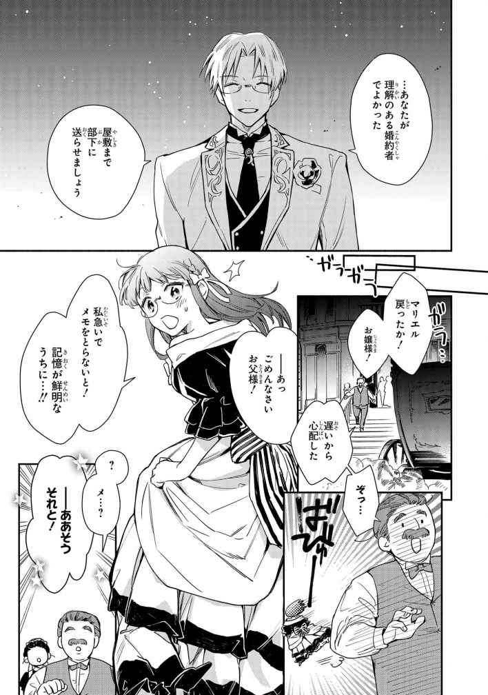
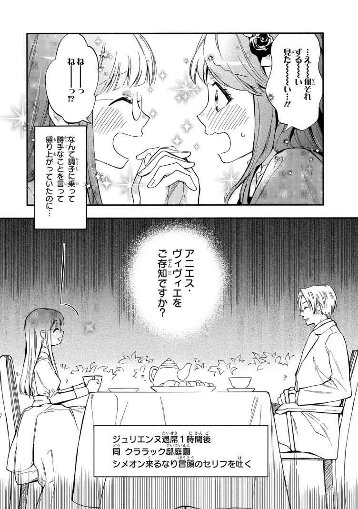
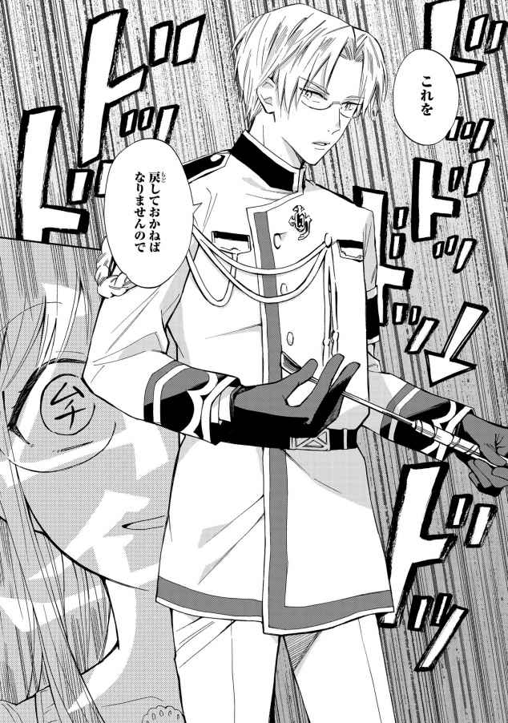

| マリエル・クララックの婚約 ノベル＆コミック試読版 | |
| 桃 春花 & アラスカぱん | |
| 一迅社 (2019) | |







１
十五で社交界に出てから三年目、ようやくわたしにも縁談がやってきた。
......らしい。
「はじめまして、マリエル嬢。シメオン・フロベールと申します」
顔合わせのために我が家を訪れたその人は、それはそれは美しい微笑 みとともに優雅な挨 拶 をしてくださった。手 土産 の小さな花束を差し出され、驚いているうちに手を取られ口づけが贈られる。流れるような動きを、わたしは呆 然 と眺めているしかできなかった。
「お会いできて光栄です」
「こちらこそ......ようこそ、おいでくださいました。マリエル・クララックにございます。はじめまして」
挨拶を返し、ちゃんとおじぎもしたのは我ながら上出来だ。かろうじて貴族の令嬢として恥ずかしくない体面はとりつくろえたと思う。でも頭の中は大 嵐 。もうなにがなんだか、めちゃくちゃよ。
だってシメオン様よ！ あのシメオン・フロベール様！ 近衛 騎士団最凶の頭脳、微笑む刃 、うるわしき毒花のシメオン様！
「いや、そんな呼び名聞いたことないよ？」
と、おっしゃっていたのはお父様。ええ、わたしが個人的にそう呼んでいるだけですから。もちろん、よそでは言わないわよ？ わたしだって人に言っていいことと悪いことの区別くらいはつけている。
――それはともかくシメオン様。
建国来続く由緒あるフロベール伯爵家のご嫡男にして、近衛騎士団副団長。王太子殿下とは幼少の頃 から親しく交流なさっていて、将来重臣間違いなしと言われている若手出世株の筆頭だ。
それだけでも令嬢たちが目の色を変える理由に十分すぎるというのに、さらには物語の王子様が抜け出してきたかと思わせるような、たいへんに美しい容姿の持ち主ときた。
すらりと高いお背に、均整のとれた見栄えする体格。淡い金髪に縁取られた白 皙 は穏やかな微笑みを浮かべ、知性と品性を漂わせている。眼鏡 の奥の水色の瞳 は、優しげな中にも凛 とした強さと鋭さを併せ持っている。二十七歳という年齢は、同年代の少年たちにはない落ち着きを備えており、大人 の雰囲気が素敵だった。
いるのね、こういう人！ 物語の中だけじゃなく、現実にもこんなできすぎの完 璧 人間が存在するのね！
そしてその人が、わたしの縁談相手!?
お父様――!! 本当の本気で嘘 でも冗談でもなかったのね！ 今この瞬間まで信じていなかったわごめんなさい！
いえだって、ありえないもの。我が家もいちおうは子爵家ながら、歴史でも格でも財産でも、フロベール家には遠く及ばない。お父様とお兄様はお城の役人としてそれなりに出世しているけれど、まさか大臣までは望めない。そこまで行けるほどの家柄ではない。代々大臣や宰相を輩出してきたフロベール家とでは、天と地ほどにも格差があった。
これが物語ならわたしがどこかで見初められていたとかいうお約束な裏があるものだけど、現実にはないないありえない。容姿以前に、そもそもわたしが人の目に留まるはずがないのだから。
本当に、一体どんな手を使ったらこんな大物を釣り上げられるのよ。間違いなくお父様の生涯最高の大金星よね。
「お父上からお聞きかと思いますが、あなたの結婚相手に名乗りを上げさせていただきました。受けていただけますでしょうか」
ああ、なんて柔らかに心地のよいお声。お姿だけなら夜会や園遊会で何度も遠目に見かけていたけれど、お声を聞いたのははじめてだ。美しいお顔にふさわしい美声ね。ほんの少し高めで、優しく話せば甘い響きになり、冷たい響きをともなえばきっと迫力満点になるのでしょう。やんわりじわじわ、しかし容赦なく尋問とか、想像するだけでハァハァしてきちゃう。ちょっと一回尋問されたい！
「マリエル」
後ろからお父様が囁 いて、わたしの背中をつついてきた。はっ、いけない。妄想にひたっている場合ではなかった。
わたしはあわてて気を引き締め、シメオン様に答えた。
「身に余る大変に光栄なお話です。でも、本当にシメオン様はよろしいのでしょうか？ このとおり、わたしは美しくもなければ才気走るでもなく、これといって特徴のない地味――――な女でございますが」
あちゃあ、と言わんばかりにお父様が額を押さえた。ちょっとあけすけすぎたかしら？ でも大事なことだもの。以前のように、顔を見たとたんやっぱりやめたと思われた可能性は大ありなので、しっかり確認しておかなければ。
お兄様も同感のようで、わたしをとがめる表情はしていなかった。ついでにお母様はシメオン様に見とれて、何も聞こえていないようだった。
「お気持ちが変わられましたのなら、どうぞ遠慮なくおっしゃってくださいませ。慣れておりますからわたしは平気です」
あとで変にもめたくはないので、わたしははっきりと伝える。シメオン様は驚くようすもなく、くすりと笑いを漏らした。
「そのようにおっしゃらずとも。お可愛 らしいと思いますよ。それに、とても賢い方だと伺っております」
お父様！ 盛ったわね、話をうんと盛ったわね！
ちらりと視線を向けると、お父様はぶんぶんと首を振った。なにを今さら。そりゃあ、少しくらいはよく言わないと見つかる話も見つからないでしょうけれど、よりにもよってシメオン様にどんな期待をさせたのよ!? 下手 に見栄を張ってあとで困るのはわたしなんですからね！
「いいえ......恥ずかしながら、何も取り柄のないつまらない女でございます。人並みなことはできますが、それ以上のものは何も......ですので、きっとがっかりさせてしまうと思います。あとでそう言われますとわたしとしても残念ですので、お考え直しになるなら今のうちに」
「まあ、なにを言うのマリエル！ せっかく望んでくださっているのに、そんな卑屈なことを言っては失礼ですよ！」
シメオン様の美 貌 に魂を抜かれていたはずのお母様が、突然復活して口を挟んできた。ちょっとお母様、いくら美形でもあなたと結婚するわけじゃないんですからね。
「こんなにいいお話をいただいて、ぐずぐず言うんじゃありません。足りないところは頑張って埋めればいいでしょう。最初から投げ出してどうします」
ああ、これを逃せば二度とわたしに縁談なんて来ないかもしれないという危機感もあるのね。お母様の顔にかつてない気迫が漂っていた。ちょっと怖い。
「お母様......」
「マリエル嬢は、相手が私ではご不満ですか？」
母と娘の対立を、甘い声がさえぎる。シメオン様に目を戻せば、ぞくりと背中に戦 慄 が走った。
なにその微笑み――!! こちらをいたぶるような、もといからかうような、ちょっぴり意地悪っぽさを含んだ表情！ クラクラする！ 凛 々 しいのに色っぽいってどういう属性なの!?
甘い微笑みの下に隠れた底知れなさ。女心をとろかせる言葉を口にしながら、いったい内心ではなにを考えているのだろう。けっして一筋縄ではいかないとびきりの曲 者 ――そうなの、それこそがシメオン様なのよ！
このラグランジュ王国の貴族なら、誰 でも知っている。近衛騎士団の副団長は、美しく優しげな見た目とは裏腹に、とても冷徹で時に苛 烈 、有能きわまりない策略家だと。
いつも穏やかに微笑んでいるからって、やんわり優しい言葉づかいだからって、侮 ってはいけない。ただの優男だろうと舐 めてかかったお馬 鹿 さんたちは、みんな痛い目に遭っている。けっして家柄だけで今の地位に就いているわけではないのだから。
剛の団長を補佐する、柔の副長。すぐれた頭脳の持ち主。まさに王道中の王道！ いい......！ この腹黒臭がたまらない！ わたしの萌 えツボど真ん中よ！
お父様ありがとう！ こんな大好物を一生そばで観察できるなんて、マリエルは幸せです！
もはやわたしに他 の選択肢はなかった。シメオン様はどうやら、本気でわたしと結婚するおつもりらしい。なにを考えてこの縁談に乗ってきたのか、やっぱり疑問だけれどもういいわ。わたしはただ萌えのおもむくまま、彼が差し出す手を取ることしか考えられなかった。
理性より感情、いえ欲望。これほどわたしの萌え心を刺激する人はいない。人生最大にしてきっと一度きりの大きな幸運を、手放すことなどできようか！
「私と、結婚してくださいませんか？」
彼の問いはまるで愛の告白。夢のような申し出に、わたしは陶然とうなずいた。
「わたしでよろしいのなら......よろこんで」
――これがわたしとシメオン様の、婚約のはじまりだった。
２
二十七歳の今にちに至るまで、まるきり浮いた噂 のなかったフロベール家の跡取り息子を射止めるのは、はたしてどこの令嬢か!?
かねてからそう噂のネタにされ、憧 れと期待と好奇の目を向けられていた人の婚約発表は、ラグランジュ王国の貴族社会を、驚 愕 とともに席 捲 した。
お相手は、クララック子爵家のマリエル嬢――と聞いて、ほとんどの人がはてと首をかしげたことだろう。
クララックという家名を知っていたとしても、そこの娘はどんな人物であったのか、誰 も記憶していなかったとしても驚きはしない。地味でまったく目立たない、印象に残らない空気のような存在。それがわたしだから。
なので逆に人々の好奇心を刺激したらしい。誰も知らない謎 の令嬢。どんな隠れた花なのか？ と盛り上がり、いよいよシメオン様とともに公の場に姿を現した時、会場中から一斉に視線が集中したものだ。それはもう、身の危険すら感じるほどに。もし一人で来ていたのなら、たまらずに震え上がって逃げ帰っていただろう。
そしてあれこそが――と目にした次の瞬間、誰もがえ、と気の抜けた顔になった。え、アレなの？ 本当に？ 何かの間違いでなくて？ 前座じゃないの？
そんな人々の疑問と困惑が手にとるようにわかった。すみません、コレなんですよ。ええもう、わたしも本当に？ って聞きたいです。今でもどうしてこうなったという気分です。
さして格の高くない、きれいに真ん中あたりの家柄に、これといって特徴のない冴 えない娘。そんなのがシメオン様の婚約者だと聞いて、納得がいかなかった人は二桁どころか三桁に上るかもしれない。当然、あちこちの人から嫌味や皮肉を聞かされた。どこかへ行くたびに、嘲 笑 混じりの陰口にさらされた。面と向かって馬 鹿 にされることも日常となった。
そして今夜も――王宮で開かれた舞踏会においても、もはやすっかりおなじみの光景がくり広げられていた。
「申し訳ありません、お待たせして」
あちこちの知り合いから声をかけられ、長い間つかまっていたシメオン様が、ようやく切り上げてわたしの元へ戻ってきた。わたしは膝 に開いていた小さな手帳を、刺 繍 の入った手提げに戻した。急いで書きつけた内容は、人に見せられるものではない。素早く隠して、素知らぬ顔でシメオン様を迎えた。
「いいえ、お気遣いなく。シメオン様はお付き合いが多いですから、わたしのようにのんびり楽しむわけにはいきませんものね。もうご挨 拶 はよろしいのですか？」
来る途中で取ってきてくれた飲み物のグラスを、お礼を言って受け取る。待っている間三杯も飲んだので、お腹 はそろそろタプタプだ。ちょっと控えておけばよかったな。
「ええ、必要な相手には済ませましたから。婚約の話を口実になんだかんだと話しかけられて、さすがに疲れました」
「ふふ、人気者は大変ですね」
「あなたもでしょう？ けっこういろんな方と話していらしたようですが」
穏やかな微笑 みにちょっぴりいたずらっ気を覗 かせながら、シメオン様はわたしの隣に腰を下ろした。あら、気付いてらしたのね。毎度おなじみの意地悪攻撃を受けていたことに。こちらのことも一応は見ていたのか。
死角はないというわけですね！ さすがです、副長！
きっと騎士団の皆様も、日々シメオン様のさり気なくも鋭い視線に監督されているのね。さぞ気が抜けないことでしょう。なんて素敵。
「わたしの場合は、ほとんどシメオン様がらみですよ。皆様とてもご興味があるようで」
うふふと笑うわたしに、シメオン様も優しく微笑み返す。はたから見ていれば仲良く談笑する婚約者同士だろう。女の方がまるで釣り合わない地味な眼鏡 娘 ということで、皆様さぞかし不満だろう。
シメオン様を真似 したわけじゃないの。わたしも以前から眼鏡愛用者なのよ。はずしても行動できないわけじゃないのだけれど、それだと離れたところの人が誰だかわからなくなっちゃって、ちょっぴり不都合なのだ。わたしは見た目より実を取る。人間観察ができなければ、集まりに出ている意味がない。
「こちらも同様ですよ。ある程度予想はしていましたが、婚約というのはこれほどに人の関心を引くものなのですね」
「シメオン様だからですよ。どんなお相手を選ばれるのかと、今までも興味を持たれていたと思いますよ」
「私的な話にそうまで好奇心を剥 き出しにされるのも、正直困ります」
呆 れた調子で息を吐き、シメオン様は眼鏡を直した。
わたしとちがって、シメオン様の眼鏡は魅力を少しも損なわないどころかますます素敵に見せている。眼鏡の奥の目がふと細められた瞬間、微笑んでいるのになんともいえない冷たさが漂い、思わずハァハァしたくなる。人を変態的にさせてしまうほどハマっている眼鏡！ もう完 璧 です！ これほどわたしの理想を体現した人はいない！ ちょっと小道具に鞭 でも持ってくださいませんか！ ああでもそんな姿を見たら鼻血出そう！
「......マリエル？」
おっとり微笑んでいるつもりだったのに、内心の叫びが漏れ出してしまったのだろうか。シメオン様が軽く身をかがめてわたしを覗き込んだ。あらやだ、気持ち悪さを感じちゃいました？ そんな迫力満点の笑顔で無言の問いを向けないでくださいな。ますますハァハァしちゃうじゃないですか。
「これはまた、睦 まじいことだ」
緊張と興奮を隠して見つめ合っていたら、突然横から声をかけられた。若く張りのある美声に、わたしたちは姿勢を戻して顔を向ける。こちらへ歩いてくる姿を見るや、すかさずシメオン様が立ち上がった。遅れじとわたしも急ぎ立ち上がる。
「まるで以前から想 い合っていた恋人同士のようだな。よもやシメオンがそのようになるとは、驚きと言うしかないな」
からかう調子で言って笑う人に、私は深々とおじぎをした。シメオン様は苦笑していた。
「殿下、あなたまで冷やかさないでください。もう今日 はさんざんに言われて参っているんですから」
「幸せ者の義務だ。独り者からのやっかみは甘んじて受けるんだな」
「よくもおっしゃる。それなら殿下もさっさとお相手を決められればよろしいでしょうに。なんだかんだと文句をつけては断って、陛下も困っておいでですよ」
「私の場合は好みだけで簡単に選ぶわけにはいかないからな。自由なお前がうらやましいよ」
シメオン様と親しげに会話なさるこのお方は、王太子セヴラン様だ。お歳 はシメオン様と同じ二十七歳。同年のおふたりは気も合うようで、お仕事を離れて個人的にも親しく付き合っているらしい。殿下の学友として幼い頃 に引き合わされたそうだが、単なる政略の結果ではないたしかな友情が存在するのを感じた。
これも、わたしがやっかまれる大きな理由のひとつなのよね。次期国王から信頼され親しくしている人なんて、誰だって狙 うだろう。将来安泰、絶大な権力間違いなしだもの。
本当に、お父様どうやってこんな人確保したの。何かネタつかんで脅したりしていないでしょうね。シメオン様相手にそんな真似したら、家ごとつぶされるわよ。
まさかとは思うけれど、あとでいちおう確認しておこう。物語的には萌 える展開でも我が身で経験したくはない。
会場入りしてすぐに、セヴラン殿下にはご挨拶にうかがっているので、この場でわたしが話をする必要はない。わたしは出しゃばらず、おふたりの会話をだまって聞いていた。邪魔にならないよう空気になっていないとね。そろっと数歩あとずさって距離を取る。
本来なら、わたしは殿下のおそばにも近寄れない身だ。勘違いしてなれなれしくふるまってはならない。これはあくまでも、シメオン様がいらっしゃるからなのだ。
それに、おふたりの会話に割り込むだなんて、そんな馬鹿げた真似をする気にはなれなかった。
黒髪に黒い瞳 、男らしく精 悍 なセヴラン殿下と、淡い金髪に水色の瞳、柔和でありながらどこか鋭いシメオン様。対照的な魅力を持つ美青年二人が並んでいると、まるで絵のような眺めだ。ええ、その筋の本にはこういう挿絵が載っていますとも。まんま物語の主人公たちよね。わたしは男女の恋愛物が好きで、そっち系はあまり読まないのだけれど、特に苦手意識もない。そっち系が大好物な友人もいるので、理解はあるつもりだ。何冊か借りて読んだこともあるし、けっこう詳しいと自負している。
一見すると殿下が攻めでシメオン様が受けに見えるけど、実はこういう組み合わせってシメオン様攻めが王道なのよね。普段俺様な王子に、穏やかな部下がある時は強気押せ押せの上位に成り代わる......いわゆる下 剋 上 。主従ものの王道です。
きっと友人はこの会場のどこかで今鼻血をこらえている。多分けっこう近い場所で。彼女のためにも、わたしがおふたりの間に割って入るなんて不粋な真似はしたくなかった。
公言できないだけで、そういう趣味を持つお嬢様奥様方は多いと思うのだ。そんな皆様も、ぜひ一緒にこのうるわしき光景を愛 でましょう！
「マリエル？」
あら、どうしたのでしょう。またシメオン様の迫力笑顔がこちらを向いているわ。何か察知したのかしら。さすが副長は鋭いこと、素敵です。
「お前の婚約者はおとなしいな。あまりに静かで存在を忘れそうになる」
セヴラン殿下のお言葉に、わたしは控えめにくすりと笑うだけで返した。ええ、そうです。それこそがわたしの特技。誰からも注目されない、地味で存在感のない己を最大限利用して人間観察に励み、人の会話に耳を澄ませている。それによって得られる成果はけっこう大きいのだ。個人的趣味と実益のために活動しているが、時々情報をお父様たちに流したりもする。お仕事に役立ててもらえば、結果的にわたしの生活が潤いますからね。
でも、最近はそれも難しくなってきた。シメオン様との婚約以来、すっかり耳目を集める立場になってしまったから、これまでのようにはいかないのだ。今後は方針を変えるべきかしら。むしろこの立場を利用して得られる情報を狙った方がいいかもね。
「失礼いたします......おお、そちらがシメオン殿の婚約者殿ですか」
にこやかに声をかけながら、見知らぬおじ様が近寄ってきた。はて、どなただったかしら？ この三年間マメに出かけては人間観察に勤 しんできたから、国内の貴族はたいてい把握している。まったく見覚えがないということは、外国の人なのだろうか。
四十代くらいの、立派な風 采 の人だった。とっても男前で背も高い。きちんとなでつけた鳶 色 の髪に少し白いものが交じっているのも、年齢相応の渋さを感じさせてよかった。
「おやファン・レール殿、あなたまで好奇心の虜 に？」
シメオン様が笑顔で迎えた。このくらいは挨拶の範 疇 で、相手も気を悪くするようすはない。
「いや、申し訳ない。下世話な好奇心と気を悪くなさったならお詫 びします。あちこちで噂を聞かされるものですから、ついどのような方かと気になりましてね。紹介してはいただけませんかな？」
「やれやれ、あなたまで。マリエル、こちらはヒューベルト・ファン・レール殿。フィッセルの新しい大使としていらっしゃった方ですよ」
ああ、隣国の新しい大使だったのね。そういえば交代したばかりだっけ。
わたしはヒューベルト卿におじぎした。
「はじめまして、マリエル・クララックと申します。お目にかかれて光栄です」
「こちらこそ、お会いできてうれしいですよ。いや、なんとも初々しい、可愛 らしいお嬢さんですな。シメオン殿もすっかり骨抜きなごようすで」
「まあ、そのような」
うふふと笑ってごまかしておく。そんなわけないでしょうが。こちらの顔も知らずにお父様との交渉だけで成立した婚約よ？ シメオン様にとってわたしはクララック家の娘というだけの存在。これがずばぬけた美人とか特別な才能に恵まれた人とかなら、そこから生まれるロマンスもあったでしょうけれど、地味眼鏡のわたしではね。そんな展開露ほども期待していませんよ。
いいの。シメオン様はちゃんと問題なく婚約者としてわたしを扱ってくださるから。それ以上のものなんて望まないし、特に興味もない。
わたしが今興味を持つのは、むしろヒューベルト卿、あなたです。
「ほう、貴公もそう思われるか。まったく、このシメオンが女性にこうもでれでれになるとは私も驚きだ」
「日 頃 はそのようではなかったと？」
「ああ。こんな見た目でも、中身は辛 辣 な男だからな。秋波を送る女性は多かったが、にこやかにしつつもずいぶん冷淡にあしらっていたものだ」
「それはそれは。ではマリエル嬢とは運命の出会いだったというわけですな」
「そうだな、きっと神の定めたもうた運命の伴 侶 だったのだろう。私から見ても、ふたりは実にお似合いだ」
「殿下。大使も、そのくらいにしていただけませんか。話が拡大しすぎですよ」
彼らは冗談と社交辞令を交えつつ盛り上がる。そこから話題は次第に政治方面へと流れ、情報交換やひそかなかけひきが展開されていく。わたしはそれを、例によって数歩さがった場所から静かに観察していた。
わたしは空気。わたしは置物。
表面上はおとなしく控えて男同士の会話にしゃしゃり出ない、貞淑な婚約者としてふるまいつつ。
存在を意識させず、場に溶け込んで、すべての会話に聞き耳を立てるのだ。この貴重な機会を無駄にすることのないよう、わたしは知り得た情報を全力で脳内に書き留めていた。
ああっ！ 本当なら手帳を構えて聞きたいのに！ 聞いた話を忘れないよう、ちゃんと全部覚えておけるかしら。けっこう知っている人名がぽろぽろ出てきて、意外なつながりが判明していく。こっ、これは美味 しい。さすが国の上層部、出てくる話題が半端じゃない。こんな場所で交わす会話だからそれほど秘密の内容ではないのだろうけれど、それでもわたしにとっては最高級のお宝情報ばかりだった。
話が一段落してヒューベルト卿が離れていくと、わたしはシメオン様たちに断って御不浄へ向かった。
まずは大自然の摂理を解消して、その後化粧室で手提げからふたたび手帳を取り出す。わたしの大事なお仕事道具よ。使えそうなネタが拾えた時のために、どこへ行く時にもけっして手放さず持ち歩いているのだ。わたしはせっせとペンを走らせ、聞いたばかりの話を忘れないうちに書き留めた。
宮廷ロマンスに政治の話は切っても切れない関係よね。深刻なエピソードを盛り込むことで、物語はぐっと深みを増す。こういう要素は想像だけで書くのは難しい。じっさいのできごとを参考にすることで、よりそれらしい面白い話になる。
ああ、なんて幸せ。こんな恵まれた立場になれるなんて。つくづくお父様には感謝だわ。お礼にうんと親孝行しよう。さっきの話の中には、お父様たちの世渡りに役立ちそうな情報もあったものね。
夢中でペンを走らせ、すべてを書き留めるにはけっこうな時間がかかった。手帳を片付け、それからようやくわたしは正面の鏡を見た。
凝った装飾に囲まれた鏡面には、若さだけが取り柄の凡庸な娘が映っていた。
茶色の髪に茶色の瞳。年より少し幼く見えるのは、化粧や髪型が控えめなせいだろうか。顔の真ん中に鎮座するのは大きな眼鏡。せめてこれをはずせば、多少は可愛いと言えなくもないのだけれど。
本当にね、皆さんが陰口を叩 くのも無理はありませんよ。こんな冴えない娘がよりにもよってシメオン様の隣にいたんじゃ、不釣り合いすぎて滑 稽 なほどだ。ヒューベルト卿やセヴラン殿下のお世辞も、露骨に滑るくらい白々しかった。
シメオン様はどう思っているのかしらねえ。いくらお父様との交渉に魅力を感じたとはいえ、肝心の妻になる相手がこれではさぞかしがっかりでしょうに。それとも、案外何も期待なんてしていないのかしら。やはりああいう方は条件の方を重視して、妻には貞淑できちんと家を守ることだけを求めるのかしらね。
シメオン様がその気になれば、恋愛なんてし放題だもの。結婚は家のため、個人的な楽しみは別の相手と、という考えなのかもしれない。
真 面 目 に考えれば少しさみしいけれど、しかたがない。貴族社会では当たり前の話だし、嫁き後れにならないうちに相手が見つかり、ちゃんと扱ってもらえるだけで御の字なのだ。求められる役割を果たし、あとは自分の楽しみを追求しよう。それでわたしも幸せな人生を送れる。特に問題はない。
手早く化粧直しを済ませ、わたしは立ち上がった。外へ出ようと扉に手をかけたところで、首をかしげる。
あら？ 開かないわ。鍵 は内側からかけるようになっているので、施錠されているわけではない。ほんの少し隙 間 を作るくらいはできるから、どうやら外の把 手 に紐 を引っかけて、どこかにしばりつけているらしいことがわかった。
あらまあ、頑張って細工したのね。覚え書きに夢中になるあまり、いつやられたのかまったく気付かなかった。犯人はどうせどこかの令嬢だろう。こういう経験は、はじめてではない。
陰口だけで済ませる人は善良だ。実力行使で嫌がらせをしてくる人の多いこと！ ええ、閉じ込めなんて軽い軽い。お気に入りのドレスを汚された時はさすがに参ったけれど、このくらいなら痛くも痒 くもない。
わたしは肩をすくめ、窓へ向かった。どういうつもりで仕掛けたのかしらね。扉をふさいだって、部屋には大きな窓もある。しかもここは一階。出入りにまったく不自由しない。
窓を開けて外を見回せば、暗くなった庭がしんと広がるばかりだった。わかる場所には人気がない。
本当に誰もいないのかな。窓から出ようとするところを指差して、なんてはしたないと笑うつもりかと思ったのだけれど......でもこの状況だと、それを目撃するためにひそむ方もたいがいはしたないわよね。
それともお嬢様方には、ドレスの裾 をたくし上げて窓を乗り越えるなんて想像もつかないのかしら。扉から出られないなら、そうするしかないのにね。
邪魔な裾をわし掴 みにし、よっこらしょと窓枠に足をかける。引っかけたり踏んづけたりしないよう気をつけてくぐり抜け、わたしは夜の庭へ下り立った。
素早く裾を直して周囲を確認する。やはり人がいるようすはない。うーん？ この場では隠れたままで、あとで悪口を言いふらすつもりかしら。でもわたしも言っちゃうよ？ 閉じ込められたのでしかたなく窓から出ましたって。
多少笑われても平気だ。もともと称賛されるような身ではない。このくらいで傷つくほど繊細なら、シメオン様との婚約なんて受け入れられたものではない。
広間へ戻るべく、わたしは庭を歩いた。どこから中へ入れるかしら。入り口をさがして建物の壁沿いに歩く。
さすがにお城は広い。どんどん広間から離れていっちゃうんだけど、ちっとも出入り口が見つからない。反対側へ行くべきだったかしら。でもせっかくここまで歩いてきたのに、回れ右するのも迷うなあ。
そのうち警備の騎士に出くわすのではないかと思う。そうしたらわたしは不審者としてとがめられるだろう。そこで事情を話して出入り口を教えてもらうか......希望としては、そうなる前に自力で見つけたいところだ。
ふと、人の気配を感じた気がしてわたしは足を止めた。庭の奥に広がる植え込みから、ひそかな声と物音が聞こえる。誰かいるのなら、近くに出入り口があるのだろうか。教えてもらいに行こうか？ でもこんな人気のない暗がりで何をしているのだろう。うかつに踏み込むと大変気まずい場面に遭遇するのではないかと思った。
わたしは植え込みの物陰に身を隠しながら、足音をしのばせてそうっと気配のする方へ近付いた。気付かないふりで立ち去るなんてしない。誰かが秘密の逢 い引きをしているなら、しっかりばっちり確認しますとも。別に言いふらすためではない。単にひとつの情報として確保するためだ。得られる機会は逃さない。どんな話が、どこで役に立つかわからないのだから。
押し殺した声が近付いてくる。どちらも男性の声だった。あら、逢い引きじゃなかった？ それとももしや、そっち系だったり？ まさかねえ――まさかでしょ。まさかよね。
たじろぎながらもわたしは逃げなかった。なんだか気配が殺気立っているように感じたのも気になったからだ。
「話が違う！」
どうやらもめているようす。痴情のもつれか、別れ話がこじれたか。しかも興奮した声と物音は二人分より多かった。ええ？ 三角関係ですか？ いえだから、まさかよね。
どきどきしていたら、突然「ギャアッ」と悲鳴が上がった。物陰でわたしはびくりと跳び上がった。な、なに？ 刃 傷 沙 汰 にまで発展した？
「早くしろ！ 警備兵が来る！」
「くそっ、ちょこまかと！」
「やめろ......っ、ヒィッ！」
ど、どうしよう。今わたしのすぐそばで、殺人が行われそうになっている。さすがにこれを傍観しているのは人の道に反する。でも飛び込んで助ける力なんてわたしにはない。下手 したら巻き込まれて一緒に殺される。
私は素早くその場を退避し、建物に近付いたところで地面から手 頃 な大きさの石を拾い上げた。えいっと力を込めて手近な窓に投げつける。
ガッシャンと派手な音を立てて、窓の硝子 が割れた。おまけにもういっちょ。またまたガッシャン。たちまち音を聞きつけた警備の騎士が駆けつけてきた。
「なにごとだ！」
「そこで何をしている！」
いちばんにやってきた騎士に、わたしはすがりついた。
「わぁぁん、怖かった......っ！ なんだかわからないけど、いきなり暗がりから人が飛び出してきて。あっちに逃げました！」
訴えながら、さきほどの植え込みの方を指差す。もめていた人たちは、息をひそめるか逃げるかしているだろう。殺人は断念したと思いたい。どうか間に合っていますように。
騎士たちが植え込みを調べに行く。わたしは保護および監視されつつ、建物のそばで待機。そうしていると、名前を呼ばれた。
「マリエル！」
シメオン様がこちらへ駆けてくる。まあ、なんて素早い現場到着。さすがです副長。
「シメオン様！」
救いが現れたとばかり、わたしは彼に飛びついた。ここでわたしが不審者だと疑われてはかなわない。無関係な通りすがりだと周りに認識してもらわねば。
「いったい、こんなところで何をしていたのです。なかなか戻ってこないからさがしていたら」
あら、お手数をおかけしましたか。それは申し訳ありません。
「ごめんなさい、化粧室に閉じ込められて、どうにか窓から出たのです。でも入り口がわからなくて迷っているうちに、おかしな騒ぎにでくわしてしまって」
「ええ、閉じ込められたことは確認しています。化粧室の扉が外から封じられていました」
あら、それもご存じでしたか。
「騒ぎというのは」
「よくわかりません......急に物音がして、暗がりから誰か飛び出してきたと思ったら窓が割れて。びっくりしているうちに逃げていきました」
もう突然のことで、何がなんだかわけがわからなくて。そう主張して、わたしは事情もわからない通りすがりだと強調する。全体的には嘘 ではない。結局何が起きていたのか、わからないままなのだから。
調べに行っていた騎士の一人がシメオン様に気付いて、報告にやってきた。人は発見できなかったが、真新しい血 痕 を見つけたらしい。ということは、襲われていた方も逃げたのね。よかったよかった、殺人は防げた。ついでにわたしの無実も証明された。これで何も見つからなかったら、わたしが一人で騒いでいたことにされてしまう。少なくとも窓を割ったことはきつくとがめられるだろう。
その後さらに質問されて、何があったのかと問われたが、とにかく突然のことなのでさっぱりわからないで通した。今ここで、どこまで話していいのか判断できなかったからだ。わたしは巻き込まれただけの不運な令嬢ということで、それほど長く拘束されることもなく広間へ戻った。心配してくれていた友人がすぐにやってきて、わたしがひとりにならないことを見届けたシメオン様は、王太子殿下へ報告に向かった。結局そのまま調査に加わることになったので、わたしは友人とともに会場を出、一人で帰宅した。
お父様とお兄様には、翌日説明した。わたしが知り得るかぎりのことを伝えると、ふたりはうまい具合に処理してくれた。結局あれは何だったのかというと、汚職の隠 蔽 に協力していた役人が、仲間割れの果てに口封じされそうになっていたという話だった。まさかの痴情のもつれではなかった。
姿は見なかったけれど、声で誰だか察しがついたのよね。襲われていた人は、お兄様の同僚だった。一度はわたしの相手候補として紹介されたこともあったのだ。あちらがお断りしてきて正式な縁談にまでは発展しなかった。でも顔と声はしっかり記憶に残しておいた。
襲っていた方も多分あの方......くらいの察しはついたけれど、こちらは確信が持てなかったので、判断はお父様たちにゆだねた。証拠のない不確かな推測だけでうかつに追及するわけにはいかないからね。でもわたしの推測は間違っていなかった。やはりその人で、汚職が発覚して罪に問われることになった。
宮廷全体から見ればささやかな事件。でもわたしには、なかなか刺激的な経験だった。
「やっぱりお城はネタの宝庫ね！ どろどろした人間関係に政治と陰謀！ うわべは華やかで、陰では事件や嫌がらせが日常という、素晴らしい舞台！ ああ、楽しいったらないわ！ 最高！」
舞踏会から数日後、わたしは友人とひとしきり盛り上がっていた。
「マリエルったらあんなことがあったのに元気ねえ。下手をしたら巻き込まれていたかもしれないのよ」
「そうねえ、ちょっとくらいはスリリングな展開があってもよかったかしら？ でも怪我 はしたくないし、あれでよかったのかしらね」
「当たり前よ。お嬢様たちの意地悪とは話が違うのよ」
呆れた顔でお説教してくるジュリエンヌだって、実は興味津々。わたしから詳しく話を聞きたがり、その前の閉じ込めの件も全部話してあげた。
「それ、多分オレリア様たちよ。あなたのあとを追うように会場を出ていったもの。あなたのことだから多分大丈夫と思っていたのだけど」
「ええ、全然問題なかったわ。結局何をしたかったのかしらね？ 扉を封じただけで窓は普通に開けられたし」
「それは、窓を乗り越えて外へ出るなんて発想がなかったからよ。あの方たちならぜったいにそんな真似はしないもの」
「ごめんなさいねえ、はしたないじゃじゃ馬娘で。閉じ込められたわーっておろおろしてても仕方がないじゃない。出られる場所があるんだから、出ないと」
「オレリア様たちも、まさか相手がこんなに図太いとは思わなかったでしょうね」
ジュリエンヌは笑って肩をすくめる。どれだけ皮肉を言われようと嫌がらせをされようと、わたしがまったく堪 えていないことを知っているから、彼女もそれほど心配しなかった。
「オレリア様たちにはむしろ感謝よ。こういう嫌がらせはお約束だけど、想像だけで形式どおりに書くのではただのありがち展開でつまらないもの。じっさいの経験をふまえて書いた方が、真に迫った内容にできるじゃない。取材させてくださったのだから、お礼を言いたいくらいよ。もちろん、シメオン様にも！」
わたしも笑う。シメオン様との婚約以来あの手この手で攻撃してくるお嬢様たちに、実は毎回喜んでいるなんて人に知られたら変態と思われるかしら？ 他の相手ではこうはいかない。婚約者がシメオン様だからこそだ。どちらにも大感謝です。
「今回のこともネタにするつもり？」
手元の本をパラパラとめくりながらジュリエンヌは尋ねた。出版社から届いたばかりの新刊だ。
「もちろん。でもあれだけじゃ大した事件でもないから、もっと大きな事件に仕立てるわ。そうね、巻き込まれた令嬢はそのままさらわれるなんてどう？ それをヒーローが助けに行くの。お約束のロマンスよ」
「あなたがヒロインでなければ、そのとおりね。普通の令嬢は閉じ込められても窓から出たりしないのよ。そこはどうするつもり？」
「うーん......じゃあ、火事でも起こす？ このままでは焼け死ぬとなれば、いくらおしとやかな令嬢だって窓くらい乗り越えるでしょう」
話をしながらわたしは新作の構想を練る。恋愛だけの話はもう飽きた。次はハラハラドキドキの、事件の連続にしよう。その中で燃え上がる恋！ せっかく仕入れた情報を無駄にはしない。もちろんそのまま書くわけにはいかないけれど、元ネタがわからないよう手を加えつつ盛り込んでいくつもりだ。
「ところでシメオン様は、それについてご存じなの？ お仕事のこと、もう話した？」
ジュリエンヌに問われて、わたしは首を振った。
「いいえ、まだよ。どうしようかとは思っているけど、まだ言える段階ではないわ」
「そうねえ。流行小説の作家なんて、良家の令嬢がするべきことではないというのが一般認識だし」
わたしのひそかな職業。それは小説家。上流から中流の女性たちに広く親しまれる、恋愛物語を書くのがお仕事だ。
この実益を兼ねた趣味があるからわたしは毎日満たされている。現実でどれだけもてない地味女でも、物語の世界ではめくるめく恋も冒険も楽しめる。むしろ現実より物語の世界の方がきれいだし楽しい。ありえない超展開だって思いのまま。萌えひとつで生きていける。だから結婚が家のための政略でもぜんぜんかまわない。よっぽどひどい相手でなければ、多くは望まない。
と思っていたら、ひどいどころか相手はあのシメオン様！ あらゆる物語、あらゆる登場人物の中でも、もっともわたしが好物とする見た目温和な腹黒参謀系！ ああ、現実でも萌えが堪能できます！ 多くは望まないどころか恵まれすぎです！
二度とない破格の幸運。これを逃さないためには、執筆活動は極力秘密にした方がいい。
そう考えると、政略結婚というのもむしろ都合がいいかもしれなかった。相手がわたしに関心を持たないのなら、隠すことは容易になる。家の中でこそこそ書いていたって、お仕事に出かける旦 那 様にはわからない。実家と出版社に協力を頼めば、秘密は守り通せる。やってみせる。
次回作には自分好みの男性を登場させてほしいというお願いを残して、ジュリエンヌは帰っていった。わたしの読者は基本男女ものが好きだから、あからさまなものは書けないけれど、それとなく匂 わすくらいならできるだろう。ジュリエンヌが喜びそうな美青年同士のからみもたくさん書こう。まかせて！ モデルはすぐ近くにいるから！
まんま黒髪と金髪じゃ誰が元ネタかわかってしまうから、俺 様系の見た目を金髪にしようかな。でもってお相手はやさしい栗 色 。うん、和み系の雰囲気で、でも中身は鬼畜とかね！ うふふん、考えるだけで楽しい！ 早く書きたい！
萌え萌えしながら紙に構想を書き留めていると、執事が来客を告げにきた。約束はしていなかったけれど、シメオン様が来たらしい。わたしは手早く身なりを確認してから応接間へ向かった。
「申し訳ありません、急にお邪魔をして」
今日もシメオン様はお美しい。白い近衛 の制服がこのうえなくお似合いです。
制服っていいわよね！ 凛々しく禁欲的で、二割増かっこよく見えるじゃない？ それがシメオン様ならもう鼻血ものよ！
「いいえ、先日のお話の続きですか？」
彼に椅 子 を勧めながら、わたしはずばりと尋ねた。彼が制服のままで来たことと、約束のない訪問から答はそこにしか行き着かない。不意に婚約者の顔を見たくなったからなんて、物語みたいな流れはありえません。
「ええ、まあ」
苦笑しながらシメオン様は座った。向かいにわたしも腰かけ、小間使いの持ってきてくれたお茶を飲みながら話をする。
「あの時あなたは、突然のことで何がなんだかわからず、誰がいたのかもわからなかったと言いましたが......」
「ええ、申し訳ありません。あの時に気付いていれば、もっと早く解決しましたのにね。あの場では混乱するばかりで。家に戻って落ち着いてから、ようやく気付いたのです」
彼の言葉の先を読み取り、わたしはしおらしく謝った。暗がりでもめていた人たちの心当たりを挙げたことを隠すと、事件の解決が難しくなる。だからお父様たちは、わたしからの情報だと明らかにしていた。そうすれば当然、重要な証言をなぜあの場で言わなかったのか追及される。この展開は覚悟していた。
用意した言い訳は先のとおり。突然のことですからね？ 暗い夜の話ですからね？ それまでにも意地悪されて閉じ込められて、精神的に参っていたところへのできごとでしたからね？ おびえた令嬢がまともな証言なんてできなくても当然ですよね？
隠してごめんなさいなんて態度は見せない。あの場でさっさと思い出さず面倒かけてごめんなさいだ。
先手を打ったわたしにそれ以上追及できず、シメオン様は一旦口を閉じた。優雅にお茶を飲んでいるだけな態度の裏で、きっといろいろ考えているのだろう。ああ、この緊張感。ゾクゾクする。
「彼らから事情聴取をしたのですが、窓を割ったことには心当たりがないと言うのです。誰がしたことか、あなたにはわかりますか？」
「......さあ。わたしは、てっきりあの人たちのやったことだと......ちがうと言うのなら、いったいどういうことなのでしょうね。わたしの他にも、どなたかがあの場にいらっしゃったのでしょうか」
なんだかお見通しだぞと言われているような気がするけれど、困惑した顔ですっとぼけた。今となってははじめから正直に言っておけばよかったという話だが、一度ごまかした以上嘘を通すしかない。窓を割ったのはわたしではありません。
だってあの時はどこまで言っていいかわからなかったんだもの！ もし騎士たちが何も痕跡を見つけられなかったら、わたしが一人で騒いで無駄に窓を割ったことになってしまう。騒ぐだけならまだしも器物損壊はよろしくない。そんなことでとがめられたくなかったので、知らぬ存ぜぬを通したのだ。
血痕が見つかったことでわたしの話が嘘ではないと信じてもらえ、その後犯人たちも検挙されたからよかったものの、一歩間違えればわたしはとんでもない問題児として大恥をかくところだったのだ。とてもではないが、最初からぶちまけられる話ではない。
ジュリエンヌやうちの家族なら証拠が見つからなくてもわたしの言うことを信じてくれただろう。でもシメオン様には期待できない。彼からそこまで信頼されているとは思えない。
「それはわかりません。いちおう調査中ですが」
「お役に立てなくて申し訳ありません」
いかにも役立たずな自分を恥じるようすで、わたしは身を小さくした。婚約者の役に立っていいところを見せたいのに、全然ダメな子でごめんなさい。愛想尽かされたらどうしよう。
――なんてね。
普通ならそういう場面なので、わたしの態度は不自然ではないだろう。シメオン様はしばらく黙っていたが、納得したのかあきらめたのか、軽く息を吐いただけでそれ以上つっこんではこなかった。
「まあ、これ以上あなたに危険がおよぶことはないと思いますが、しばらくは注意してください。夜会などへ出かける予定があるなら、私にも言ってください。他にもいろいろと、問題があるようですし」
違う話へ流したシメオン様に、わたしはちょっと首をかしげた。他の問題？
「どうも、ああいう場であなたを一人にするのはよくないとわかりました。陰口くらいならよくあることですから、あなたが平気そうにしているうちは大丈夫と思っていましたが、あそこまで悪質な真似をされたのでは放置しておけません」
あ、令嬢たちからの嫌がらせのことか。そういえば、化粧室に閉じ込められたことは確認済みだっけ？
「扉が封じられていたとおっしゃいましたよね？ 誰かがシメオン様に知らせてくれたのですか？」
「いえ。あなたをさがしに出て化粧室に向かったところ、発見したのです」
あらまあ。そこまでしてくださったんですか。それはどうもありがとうございます。
「......あの、シメオン様は軽 蔑 なさいます？ 窓から出るなんて、はしたない真似を......」
とりあえず一般的な令嬢が気にしそうなことを尋ねてみる。このくらいで婚約破棄はないと思うけど、普通は気にするよね？
「非常時だったのですから仕方がないでしょう。日頃からしているとなれば、問題ですが」
「そんな、まさか！ あの時だけです！」
うん、最近はしていませんよ。数年前まではよくやってお母様に叱 られていたけどね。
「ええ、そうでしょう。あなたがとてもおとなしい方であることは、承知しています」
そう言ってシメオン様は優しく微笑んだ。わたしをなぐさめてくださるようでいながら、無言の追及がされているように感じるのは、うしろめたいことがあるせいかしら？ きっと気のせいよね。シメオン様はわたし個人のことなんて、ろくにご存じないもの。見た目どおりの地味でおとなしい女だと思っているはず。
やむを得ない行動だったけれど、貴族の娘としてはしたない真似をしたと恥じている。そういう態度で満足してくれるだろう。
お仕事中に抜けてきたということで、シメオン様は長居しなかった。慌ただしさを詫びながら席を立ち、帰りしなにふと思い出したように言った。
「そうだ、アニエス・ヴィヴィエという名前をご存じですか？」
唐突に出てきた名前に、私の心臓は跳ね上がった。
ご存じかって？ ええご存じですよ。この世の誰より詳しいですよ。
「ええ......作家のヴィヴィエのことですよね？ 知っておりますけど......」
「あなたも読んでいらっしゃる？」
「......はい。あの、シメオン様はそういうの、お嫌いですか？」
頭の固いおじ様には、低俗な流行小説なんて読んではならんと怒る人もいる。もしやシメオン様もそういう類 の価値観なのだろうか。
「いいえ。数作読んでみましたが、なかなか面白かった」
「お読みになったんですか？ シメオン様が？」
この言葉には素で驚いた。男性が読んでなおかつ面白いと言うなんて思いもよらなかった。わたしは完全に女性を対象に書いている。はなから男性が読むとは思っていないし、読んで面白いとも思わなかった。
「従姉 経由でね。婚約したなら、これで女心を学べと言われまして」
「ああ......そういうことですか」
なるほど、納得。でもそれでよく読んだな。
「我々男が思っている以上に女性はしたたかで、けれど純粋でもあるということがよく伝わってきました。人間模様がうまく描かれていて、恋愛以外にも注目すべきところが多かった。あの作者は人を書くのがうまい。日頃からよく人間を観察しているのでしょう」
「......そうですね」
あらぁ？ なんでしょう、また微笑みに無言の迫力が漂っているような気がしますけど、気のせいかしらねえ？
「読み込んでいくと、時折妙に既視感を覚えるのです。どうやら実在の人物やできごとが話の基になっているようです。ヴィヴィエは宮廷の人々から着想を得ているらしい」
「まあ、ではあの噂は本当なのでしょうか。ヴィヴィエが貴族の女性であると......」
わたしはなんにも知りませんよー。でもそういう噂があるのは事実だし、もちろん知っていますよー。ファンですからねー。
「かもしれませんね。もしかしたら近いうちに、王宮の舞踏会で起きた事件が書かれるかもしれない」
「まあ」
うふふ、冗談ですよねー。ええわかっていますよ、ここは軽く笑って流しておきますよー。
心当たりなんてありません。わたしはただの一読者です。ヴィヴィエ先生の次回作に期待しまーす。
微笑みのシメオン様に笑顔で対抗し、最後までしらを切り通してお見送りした。動揺はけっして見せてはならない。もしかしてさぐりを入れられているのかもしれないなんて、そんなことは考えていませんよ。だってわたしは無関係なただの一読者ですからね！
自分の部屋に戻って、ちょっとぐったりした。シメオン様に隙 を見せないのは、とても疲れる闘いだった。
シメオン様......ひょっとして、気付いてらっしゃるの？ なぜ？ どこからばれた？ わたしのひそかなお仕事について、彼が知る機会などなさそうなのに。
考えすぎかしら。身にやましいことがあるから、疑われているように感じてしまうのかしら。
書きかけの構想を、私は泣く泣くボツにした。とてもこのままでは書けない。シメオン様が読めば、きっとわたしによるものだとばれてしまう。事件についてもさることながら、ジュリエンヌサービスの美青年たちが誰と誰か、絶対に気付かれる！
ああん......萌えまくってたのにぃ......。
もう少し手を入れれば、それとわからないように書けるだろうか。いえそれよりも、シメオン様の言葉はわたしに対する牽 制 だと考える方が先かしら。
作家活動を暗に非難されている......と受け取るのは、うがちすぎだろうか？ でもそういう可能性も十分にありうるので、除外するわけにはいかなかった。
わたし、もう少しシメオン様について知るべきかもね。見た目の印象や世間の噂だけでなく、騎士団内部からの声なども集めてみるべきかも。旦那様になる人がどういう人なのか、もっとしっかり詳しく把握しておかないと。
どうやって情報を集めようかと思案する。シメオン様に疑われず、自分の趣味を続けるために。この縁談が壊れることのないように、でも自分の譲れない一線は死守したい。
わたし、もしかしてとても厄介な人と婚約したのかも。
そう思いながらも、わき上がる萌えを抑えられなかった。
なんておそろしい、油断のならない人。さすがシメオン様、素敵すぎます。
未来の旦那様、マリエルはますます貴方 に萌えています。どうかこれからも、お見捨てなくよろしくね？
３
――私の婚約者を一言で表すならば、「変」だ。
「申し訳ありません、お待たせして」
ひっきりなしに話しかけてくる人々をどうにかさばいて戻ってくると、マリエルは壁際に一人で腰かけていた。
長い間放っておかれたというのに不満そうな顔を見せることもなく、静かに微笑 んで私を迎える。私をねぎらい、気にかける言葉を口にして、自身の側に起きたことは何も言わない。
彼女は彼女で、ついさっきまでいろんな人間に声をかけられていたのだが。
離れながらも時折は確認していた。私と婚約したことで一躍注目を浴びるようになったマリエルは、これまで縁のなかった妬 みや中傷を受けるようになった。さきほどもさんざんに嫌がらせをされたり言われたりしていたのだろう。
それをおくびにも出さず、何も問題はなかったという顔で泰然と私を待っている。普通ならばよくできた娘だと感心し、婚約者として満足する場面なのだが......。
「マリエル？」
彼女が私に向けてくるまなざしに、異様な輝きがある。表情はとりつくろっても、好奇心と何か得体の知れない情熱を含んだ視線までは隠せない。この地味でおとなしそうな娘が、今脳内でどんな妄想をくり広げているのか、知りたくもないけれど無視するには漂ってくる気配が不気味すぎた。
婚約者へ向ける親愛のまなざし？ 恋する相手に夢中な娘？ ――そんな可愛 らしいものか。
違う。これは絶対に違う、そんなものではない。
傍目にはそう見える光景だっただろうが、まったくの誤解だと私は確信を持って断言できた。
「はい？」
可愛らしく首をかしげ、何も考えていませんと言わんばかりのとぼけた表情で返してくるマリエル。いかにも無害そうな、特徴を挙げるのが難しいほどに平凡な見た目の娘が、実はどんな人物なのか。
私が知っていることを、彼女自身もまだ知るまい。
彼女をはじめて見かけたのは、今から数年前。今夜と同じく王宮で開かれた舞踏会でのことだった。喧 騒 を離れ、人気のない場所で一息つこうと歩いていた時、複数の女性の声が聞こえてきた。
静かな場所へ来たつもりだったのにと、内心舌打ちする。声からして若い娘たちだ。見つかると面倒くさいことになる。他 へ行こうとした時、気になる言葉が聞こえてきた。
「そもそも、あなたのようなみっともない方が王宮に出入りすること自体、恥知らずなふるまいではなくて？」
ずいぶんと刺 々 しい口調だ。見下す調子も含まれている。どうやら仲間同士で盛り上がっているのではなく、けんかでもしているらしい。やれやれと思いながらも私は足を止めた。
女性は姿かたちばかりは華やかに美しいが、水面下での対立や嫌がらせは呆 れるほどにえげつない。正直関わりたくない世界だ。しかし近衛騎士として、もめごとが起きているなら無視するわけにもいかない。ただの口げんかでおさまる程度ならば放ってもおこうが、怪我 人が出るような事態にならないか、確認だけはしておかねばならない。
大きな柱の陰からそっと覗 けば、休憩用の小さな中庭に五、六人の少女が集まっていた。どうも、全員で一人を囲んでいるらしい。
囲まれているのが誰 か、ドレスが邪魔でよく見えない。かろうじて、淡い青紫のドレスがちらりと見えた。
取り囲んでいる令嬢たちの顔を確認すれば、見覚えがある。カヴェニャック侯爵令嬢の取り巻きだ。着飾った娘たちの中心に、ひときわ華やかな少女がいることも確認できた。
カヴェニャック家のオレリア嬢は、光沢のある淡い青紫のドレスを着ていた。
......どうやら、ドレスの色が同じだったことで、難癖をつけているらしい。あれこれと投げつけられる言葉からそれがうかがえる。オレリア嬢と同じ色を着るなど身の程知らずの厚かましい女、というのが彼女たちの認識らしかった。
まったくもって、ばかばかしい。女というものは、どうしてそんな些 末 なことを気にするのか。ドレスの色など何色でもいいではないか。そもそも何百人と人が集まっているのに、全員がまったく違う色を着ることなど不可能だ。どうしたってかぶる相手が現れる。当たり前の話なのに、なぜそれが許せないのか理解できなかった。
心の底からうんざりする。とりあえず文句を言うだけで手を出すようすはないので、踏み込まず見守りだけにとどめておいた。
オレリア嬢とその取り巻きは、さんざん言いたいだけ悪態をまき散らし、最後に侮 蔑 もあらわな笑い声を上げながら立ち去っていった。その場に残されたのは、茶色い髪の娘一人になった。
うつむいた顔をまっすぐな髪が隠している。かすかに震えているのは、泣いているのか。よってたかってあれだけ言われたのだから当然だな。色は同じでも、ドレスの質は明らかにオレリア嬢のものより劣っていた。それほど高位の貴族ではないのだろう。色だけ真似 てもみっともないと、そこもオレリア嬢たちが攻撃する材料になっていた。精一杯おしゃれしてきたのだろうに馬 鹿 にされて、さぞかし傷ついただろう。
原因はくだらないとしか言いようがないが、いじめられて泣いている令嬢を気の毒に思う気持ちくらいはあった。出ていってなぐさめるべきか、その場でしばし迷う。
下手 に親切にするとなつかれて、その後大変面倒くさいことになる場合がある。基本的に、若い娘が相手の場合こちらからは声をかけないようにしている。私と親しげにしているとまたオレリア嬢たちから目をつけられるだろうし、彼女のためにも距離は取っておいた方がいい。
だが、ここで無視して立ち去るのも、可 哀 相 ではある。
どうしたものか......。
悩んでいると、小さな声が聞こえた。中庭の令嬢が漏らした声だ。嗚 咽 をこらえきれなかったのか。しかたない、なつかれない程度に軽くなぐさめるかと、あきらめて彼女へ足を向けかけた時、さらにはっきりと声が聞こえてきた。
「ふふ......うふふ......うふっ」
――なんだ？
泣いているにしては妙な声だった。嗚咽というよりも、あれは笑い声ではないのか？
「ふ......ふふふふふ......」
うつむいた令嬢はまだ肩を震わせている。しかし聞こえてくるのは明らかに笑い声だ。私は気味が悪くなって踏み出しかけた足を止めた。
まさか気が触れたか？ あの程度のいじめで錯乱するなど、弱いにもほどがあるのでは。
さきほどとは違う理由でためらっていると、別な声が響いた。
「マリエル！」
年若い――幼いと言ってもいい年 頃 の娘が駆けてくる。知らない顔だ。おそらく社交界に出たばかりなのだろう。黒髪の少女は、中庭の娘を目指してやってきた。
呼ばれた娘がようやく顔を上げた。そちらもやはり幼かった。大きな眼鏡 をかけた顔は、見るからにうれしそうに頬を紅潮させていた。
「ジュリエンヌー！ すっごかったー！ もう絵に描いたような集団イビリ！ 典型的な意地悪お嬢様！ 臨場感満喫よ、ゾクゾクしちゃった！」
......おい。
「囲まれるってあんな感じなのね！ 周囲がドレスの壁でけっこうな迫力よ。いいわあ、オレリア様サイコー。惚 れちゃいそう」
「......まあ、心配はいらないと思っていたけど」
ジュリエンヌと呼ばれた黒髪の少女は、呆れた顔で肩をすくめた。
こっちも呆れている。なんだその全開の笑顔は。あれほどひどい悪態を投げつけられ馬鹿にされて、なぜそうも喜ぶ。
「ああっ、忘れないうちに書き留めないと！ ありとあらゆる言葉を駆使して罵 ってくださったのよ。よくあれだけいろんな言い回しが出てくるなって感心しちゃったわ。さすがみなさん教養にあふれて、語 彙 が豊富でいらっしゃるのねえ。見習わなくっちゃ」
マリエルというらしい令嬢は、手提げから何か取り出した。小さな手帳と、ペン？
「あれだけ聞かされたらほとんど考える必要がなくて助かるわ。悪口辞典が作れそう。また来てくださらないかな。いろいろ参考になりそうでぜひ今後ともお付き合い願いたいんだけど」
「どうかしら。オレリア様からしたら、わたしたちなんて気にするほどの存在でもないと思うわよ」
「そうねえ。今夜はたまたまドレスの色がかぶったから目をつけてもらえたけど、毎回そう上手 くはいかないわよねえ」
上手くいくって何だ。いびられて何が「上手い」んだ。
「意地悪令嬢に目の敵にされるには、それなりの特徴が必要よね。物語のヒロインは美人とか優れた特技があるとか、何かしら理由があっていじめられるもの。ヒロインになれるだけの資質ってものが必要なのよ。わたしじゃ無理よね......誰かそういう人いないかしら。密着取材をさせてほしいわ」
話しながらもマリエル嬢はせっせとペンを動かす。慣れているのか、ジュリエンヌ嬢は向かいに座って見守るだけだ。
どうやら心配はまったく必要なかったらしいとわかった。しかし別な意味で理解できない。物陰から女性の会話を盗み聞きするなど誉められた行為ではないが、マリエル嬢の異様さが気になって私はその場を立ち去れずにいた。
「これでもかといじめられる薄幸の美人が、素敵な男性と出会い、最後には幸せになって周りを見返す。読者はやっぱりそういうのが好きなのよね。でも見せ場を際立たせるためには、それに至るまでの展開が大事よ。いじめ描写が薄っぺらじゃ白けちゃう。いかに読者を物語の世界に引き込むかが難しいのよねえ。ヒーロー以上に悪役が輝かないといけないのよ」
読者......物語......悪役......なるほど。
調子よく続くマリエル嬢の言葉を聞いているうちに、なんとなくわかってきた。どうやら小説のことを言っているらしい。彼女は小説を書くのか？ さきほどのオレリア嬢たちからのいじめを、参考にできると喜んでいるのか。
そういうことかと、ようやく理解できた。奇怪としか言えない反応に脳の病を心配したが、いちおう理由があってのことと知り安心した。
――しかし納得はできない。
あの状況で小説の参考になることしか考えないなど、普通の少女の反応か？
人目につかない場所に連れ込まれ、集団から攻撃されながら、小説のネタにできると喜ぶか？ 自分に向けられた悪意と侮蔑に満ちた言葉の数々を、ありがたく聞いて手帳に書き付けるなど、絶対に普通の行動ではないだろう。
いったい彼女はどういう人物なのか。おそらく社交界に出てきたばかりの、まだ子供っぽさが目立つ娘に、私は不可解さを覚えずにはいられなかった。
その後も夜会や園遊会などに出席するたび、彼女の姿を見かけた。マリエル嬢は人が集まる場所に出てくるのが、好きらしい。
職業柄人の顔や特徴を覚えるのが身についていることと、彼女が常に眼鏡をかけていることから判別できたが、実を言うとマリエル嬢は存在を見つけ出すのが難しい。特別な美 貌 もなければ、反対に目を引くほどの醜女でもない。髪はありふれた茶色。中肉中背で、十人並みという言葉を体現している人物だ。
どこにでもいそうな、人混みの中にまぎれるとすぐにわからなくなる娘。何かに似ていると考えて、あれだと思い出す。そう、野生生物が周囲の風景に溶け込んで姿をくらます、擬態と保護色だ。
木の葉そっくりの虫や、身体 の色を変えるトカゲなど。人混みの中からマリエル嬢を見つけ出すのは、森の中で身を隠す生き物たちを見つける遊びに似ていた。
見つけた時はひそかに達成感を覚えたものだ。ここにいたかと声を上げそうになる。森で虫を追いかけた幼い日のように、マリエル嬢をさがし出すのがいつしか習慣になっていた。
そして見つけるたびに、彼女は変だった。
集まりには積極的に出てくるくせに、人と話をすることもなくたいてい一人でいる。自分から声をかけられない内気な性格なのかと思ったが、そういう娘ならば誰かに気付いてもらうことを期待しているものだ。集団の隅にくっついたり、目につくような場所をうろうろしたり......私の周りにもよくそういう令嬢が現れるので、違いがはっきりわかる。マリエル嬢は注目されることを望んでいない。それは確信できた。
そういう目で見ていると、彼女があえて目立たないようにふるまっていることもわかってきた。
容姿だけのせいではない。身なりも人目を引かないように、常に無難なものにまとめられている。若い娘ならば少しでも目立つように、他の娘よりも美しくなるように、装いには工夫を凝らすものだろう。それがマリエル嬢にはない。いつもおとなしい装いで――さりとて地味すぎて逆に目立つこともなく、絶妙に平凡な、可もなく不可もなくといった装いばかりを選んでいる。毎回それだと、わざとやっているとしか思えない。あそこまで目立たないよう無難さを維持するには、実はけっこう努力が必要なはずだ。
なぜそんな真似をする？ ――それも、観察していればわかった。
自ら話すことはないが、人の話は聞きたがる。盛り上がっている人々のそばにさり気なく近寄っていって、風景に擬態して気付かれないままじっと聞き耳を立てている。相手は老若男女おかまいなしだ。あちこちにまぎれ込んでは人の話を拾いまくっている。誰も彼女の存在を気にしないのがすごいが、もともと大勢が集まっている場だ。これといって特徴のない娘が近くにいても、風景のひとつと流してしまうのだろう。自分とて、あの夜のできごとがなければ、彼女の存在に気付いていたかどうか自信がなかった。
そうやって人の会話を集めた後、物陰でこっそり手帳に書きつけている姿もよく目にした。そういう時は実に楽しそうな表情になっていた。またいいネタが手に入ったのだろう。いったいどんな小説を書くつもりなのやら。呆れながら見ているうちに、おかしくもなってきた。
若い娘が社交界に出てくる目的は、ほとんどが結婚相手を得るためだ。自分を売り込み、少しでも条件のいい相手を見つけようと躍起になっている。そんな場所で目立たないことを第一に心がけ、ひたすら小説のネタを集めるマリエル嬢――何をしに来ているのかと、つっこみたくてたまらない。
そんなふうに、仕事や社交のかたわら奇妙な少女を観察する日々が数年間続いた。
「シメオン、お前は結婚しないのか？」
ある日、視察のお供をしている最中、セヴラン殿下が脈絡もなく問いかけてきた。私は軽く眉 を上げただけで済ませた。
「そのお言葉、そっくりそのままお返しいたしますが」
「私は相手を吟味しているだけだ。独身主義を宣言した覚えはない」
部下たちも周りにいる中で、いったい何の話かと私は息をつく。
「私も独身主義を主張した覚えはありませんよ」
「ならばなぜ結婚せぬ。相手をさがそうともせんではないか。もうじき三十になるというのに女っ気がまるでないと、あらぬ勘繰りを受けるぞ」
「ご心配なく。そんな勘繰りをされるとしたら、間違いなく相方は殿下になりますから」
「それが心配だから言っているんだ！ 私のためにも結婚しろ！」
すでに何か言われたのだろうか。やけにむきになって殿下は指を突きつけてきた。
「お前の母親も心配しているぞ。跡取り息子がいつまでも独身ではまずいだろう。なんなら私が相手をさがしてやってもよい。見合いしろ。さっさとしろ」
「見合いですか......そうですねえ」
殿下の懸念はともかく、結婚については考えないでもなかった。
ここ最近両親、特に母からしきりにせっつかれているのだ。女性ほど急ぐ必要はないとはいえ、二十七で婚約も決まっていないのでは不安がらせてもしかたがない。私もそろそろ本気で考えるべきかとは思っていた。
別に結婚したくないとか、女に興味がないとかいうわけではないのだ。単に仕事優先で後回しになっていたのと、これぞと思う相手がいなかっただけの話で。
しかし見合いは気が進まなかった。どんな令嬢が出てくるのか不安だ。オレリア嬢のような、うわべは完 璧 でも中身に問題のある人物だとたまったものではない。人柄優先で紹介してほしいが、女性というものは本性を隠すのが上手い。気立てのいい品行方正な娘というふれ込みで紹介されたのが、実は陰湿な性根を隠し持っている可能性も少なくなかった。
多くは望まない。人として安心して付き合える相手がいい。
そう答えると、殿下はひどく困った顔をされていた。殿下ご自身も妃選びに苦労しておられるから、私の言い分に共感されるはずだ。理想どおりの相手が見つかったら、私に紹介する前にご自分が求婚されることだろう。
難しいものだ。
どうしたものかと思ううち、マリエル嬢の父親であるクララック子爵と話をする機会があった。彼は、娘の結婚相手を紹介してもらえないかと頼んできた。
「部下の方々の中に、ちょうどよさそうな方はいらっしゃいませんかねえ。娘は今年十八でして......まあ、お世辞にも美人という評価はできませんが、頭は悪くありません。賢く立ち回って、果たすべき役目はきちんと果たします。そのあたりはちゃんと躾 けておりますので、自信を持って嫁に出せます。ただ、どうにもおとなしい娘でして、なかなか男性の目に留まることができませんでね。華やかな近衛 の皆さんから見ると物足りなく思われるかもしれませんが、結婚相手としては悪くないはずなんですよ。妻と恋人は違います。家を預ける相手には、貞淑と堅実さが必要です。娘はその点お買い得ですよ――と言ってですね、どなたかに声をかけてはいただけませんか」
人のよさそうな顔をした子爵は、なかなかに上手い言い方をした。マリエル嬢に美しさや華やかさは求められないことを認めつつも、結婚相手としては十分な資質をそなえていると主張する。見かけによらず世渡り上手で、着実に出世している彼らしい戦略だ。そういう売り込み方をすれば、話に乗ってくる男もいるだろう。
だが、少しばかり正直ではない。
マリエル嬢の一面を説明してはいるが、肝心な部分が抜けている。あの、他に類を見ない奇矯さは、結婚相手にとってささいなことと切り捨てられない重要な要素だろうに。
ありのままに言ったら見つかる話も見つからない。伏せた事情はわかる。しかし当人を知っている私としては、そのまま部下に話を持っていくのはためらわれた。
途中で本性がばれて破談になどなれば、さすがのマリエル嬢も傷つくだろう。社交界に噂 が流れれば、今後の相手さがしにも影響する。ただでさえ縁がなさそうな彼女にとっては、致命的な傷になりかねない。
......いや、彼女ならその状況すら喜んでネタにするか？ ありそうだ。
喜色満面で手帳に向かうマリエル嬢の姿が容易に想像できて、ため息が出てきた。あの娘には、たしかに誰かがいい縁を紹介してやる必要があるだろう。自力では絶対に相手を見つけられまい。
彼女の趣味を理解しつつ受け入れてくれる男がいればいいのだが......と考えて、一人いることに気が付いた。
そうだな。別に部下に話を回さなくても、私が受ければいいのではないか？
私は隠された彼女の趣味を知っている。ちょっとおかしな性格であることも知っている。だが嫌ってはいない。今では楽しんで観察しているくらいだ。
マリエル嬢は、間違いなく奇矯な人物ではあるが、性悪ではなかった。噂を集めるのに熱心でも、それを言いふらすことはしない。彼女の行動はあくまでも小説の参考にするためであって、他人の噂そのものに関心を持ち面白おかしく吹聴することはない。なにかと噂話で盛り上がる社交界の中では、得難い存在と言えるかもしれなかった。
行動原理が常に小説のためというあたり、素直に美点と称賛しきれないものもあるが......悪くないのではなかろうか？
こちらも結婚相手をさがしていたところだ。ちょうどいいと思い、子爵に私が名乗りを上げると伝えたところ、大変に驚かれた。
「いやあ、それは実に光栄なお言葉ですが......正直なところ、釣り合いが取れないのでは？ 我が家とフロベール家では家格が違いますし、シメオン殿ほどの方でしたらもっと条件のいい令嬢がいくらでも見つかりましょう。年も少々離れておりますし......」
話に飛びつかず、むしろ懸念を示すあたりに、彼が見た目どおりの呑 気 な男ではないことがうかがえる。目の前にごちそうをぶら下げられてもすぐに食いつかない、罠 を用心する賢さがあった。
子爵が何を警戒したのか、私にはわかった。クララック家と釣り合う程度の男が相手であれば、マリエル嬢の本性がばれても上手くとりなすことで押し切れる。ちょっと変わった趣味を持っているだけだと、適当にごまかすつもりだろう。私が相手だとそれは通用しない。もとから力関係が不均衡なので、文句をつけられれば対抗できない。欲を出して飛びついても結局大損をしかねないので、避けるべきと判断したか。
おそらく子爵は、私に何か問題がある可能性も考えたのだろう。だからこんな釣り合わない縁談に名乗りを上げたのではないかと警戒している。賢いことだ。
「そうですね、たしかに十八の令嬢から見れば、私などおじさんでしょうが」
「いや、いや、シメオン殿を見てそう思う女性はいますまい。まあ九歳やそこらの差など、よくある話ですが」
「ええ、うちの両親も八歳違いです。なので、私がお願いしてもよいかと思ったのですが、エミール卿は気乗りなさいませんか」
「いや、そういうわけではありませんが」
穏やかな笑顔でおっとり受け答えしつつも、脳内では忙しく検討しているのだろう。彼の苦労を察し、私は顔には出さず笑った。
慎重な人間は、時に考えすぎて余計な気苦労をしてしまう。私も同じ系統の人間なので馬鹿にすることはできない。子爵がためらう気持ちはよくわかる。実のところはまったくの取り越し苦労なのだが。
私は子爵がどう対処するかに興味を持って、種明かしをしないまま話を続けることにした。
「こちらにとっては身に余る素晴らしいお話ですが......そちらのご両親はどう思われますかな？ あまりに格下の家が相手では、難色を示されるのではないでしょうか」
「そのように卑下されずとも。クララック家とて、それなりに長く続く家柄ではありませんか。派手に目立つことはなくとも、代々誠実に王に仕え、一定の評価を得ているはずです。あなたやご子息も有能な仕事ぶりで認められていらっしゃいますし」
「いや、ははは、そんな持ち上げられるほどのものでは」
「当家は伯爵、そちらは子爵、釣り合いに問題はないと思いますが」
「はあ、そうですかねえ......」
ふふ、脂汗がにじみそうな雰囲気だな。それでも表情には出さないのだから大したものだ。
「いやあ、しかし娘は、なんと申しますか、地味な子でして。伯爵家の奥方として表に顔を出すには、不足が多いかと」
「家をまかせる人物として問題はないと、おっしゃったではありませんか。私はまさにそういう女性をさがしていたのです。流行や噂話にばかり熱心で、ろくに家にいない妻では困ります。必要な社交ができるだけでいい。特別華やかでなくとも、きちんと家を守ってくれる人を望んでいるのです」
「ほう、意外と保守的な考えでいらっしゃる」
「うぬぼれと思われそうですが、寄ってくる女性は多いのでね。華やかなだけの女性には、もう辟 易 しています。生涯の伴 侶 として付き合っていく相手なのですから、うわべよりも中身の方を重視したい。落ち着いた、堅実な女性と結婚したいのですよ」
「ふむ......」
この言葉には心が動いたのか、子爵は考える顔になった。じっさい遊び人ほど結婚相手は地味だったりするものだ。いろんな女を見ているだけに、本当に価値のある人物をちゃんと見極める。そうした事例を思い出したのだろう、笑いでごまかすのをやめてさぐるように尋ねてきた。
「......本当に、見た目はまったくもって地味の一言ですよ？」
「なんら問題ありません」
「おとなしいばかりで、面白味に欠けますが」
いや、面白いだろう。あんなに面白い人間は、そうそういない。
「物静かな人にも、その人なりの魅力があるかと」
「昔から物語を読むのが好きな子でしてね、そのせいか少々夢見がちな、現実ばなれしたところもありますが」
ものは言いようだな。少々どころか非常にかっ飛んでいる。夢見がちなどという可愛 い言葉で表現できる範囲かどうか疑わしいものだ。
「それは、感受性が豊かということでは？」
「そのようにも言えますか......」
嘘にはならないだろう。周囲の人々からネタを拾い集めているのを、少しばかり美化して表現しただけだ。
そうですねえ、と子爵は息をついた。
「では、とりあえず一度会ってやっていただけますかな。じっさいに見て、お気に召さなければはっきり言っていただいてけっこうです。本人抜きで話しているばかりでは伝わらない部分もありましょう。ぜひ直接おたしかめになってください」
とうとう子爵の了承が得られ、マリエル嬢と顔合わせをすることになった。本人を見れば私も気を変えるだろうと、彼は考えたようだ。もちろんそんなはずもない。私はクララック家を訪問し、はじめてマリエル嬢と言葉を交わし、その場で正式に婚姻を申し入れたのだった。
私が見込んだとおり、マリエルは陰湿さのない明るい人柄だった。常に控えめにふるまい、出しゃばることをしないが、話をすれば案外気の利いた受け答えが返ってくる。父親の言うとおり頭はいいようだ。物語をたくさん読み、ついでに自分でも書いているだけあって、要領よくまとめて話すことが上手い。知性的な相手との会話は余計な苛 立 ちを感じることもなく、いい相手を見つけられたことに私は満足している。
母は、少しばかり違う意見を持っていたようだが。
「シメオン、本当にあのお嬢さんでいいの？」
両家の顔合わせの後、不満と疑問をないまぜにした、非常に複雑な表情で聞かれた。
「ええ。いいと思ったから求婚したんです。母上は気に入りませんか？」
「そういうわけではないけれど......」
母は困った顔をする。
「落ち着いた、きちんとした方だということはわかりましたよ。教養もあるようですし、問題があるというわけではないのだけれど」
問題はない。ただ、非常に地味なだけで。
うっかり存在を忘れそうになるほど、周囲の風景に溶け込みすぎるだけで。
評価に困るほど存在感の希薄な、保護色をまとった生き物に、母が物足りない思いを感じていることはよくわかった。もっとわかりやすい美しさや愛らしさがほしいのだろう。
マリエルは奇矯な性格を完璧に隠し、どこから見ても平々凡々な、まるで特徴のない令嬢を演じきっていた。私にも隙 は見せない。貞淑と言えば聞こえのよい、空気のような存在になりきっている。
内面を知らなければ、あれを評価するのは難しいだろうな。私もどこを誉めればいいのか少々考える。通り一遍の、お世辞のような言葉しか出てこない。彼女が意図してそういうふうにふるまっているので、注目すべき部分が見つからないのだ。
さっさと本性を暴露して婚約破棄されてはならぬと、用心しているのだろう。無駄な努力だったと知った時、どんな顔をするだろうか。面白そうなので、もっとも効果的な瞬間を待って、私はまだ彼女に何も告げていない。だまされたふりで調子を合わせている。
驚く顔を想像すると笑いがこみ上げた。その半面、複雑な気分にもなった。隠すということは、私に気を許していないということだ。婚約者とはいえ、私たちの関係はまだ形だけのものでしかない。
それがなんとなく不満でもあった。
「副長、婚約者の方がいらっしゃいました」
馬場に出ていた私のところまで、部下が取り次ぎにやってきた。約束の時間ぴったりに、マリエルが到着したようだ。馬の世話を係の者にまかせ、私は表へ向かった。
これまで一度もわがままやおねだりをしたことのないマリエルが、先日珍しく願い事を言ってきたのだ。
「できましたら、一度近衛騎士団を見学させていただきたいのですけど......」
言われた瞬間は妙なことを望むと思ったが、おそらくこれも小説のネタ集めだろうと理解した。団員に身内がいるとかでもなければ、騎士団の本部など女性には覗けない世界だ。未知の領域を開拓しようと乗り出したか。
婚約してから知ったことだが、彼女の小説は趣味ではなく仕事として本格的に取り組んでいるものだった。ちゃんと正規の出版社から何冊も発行されている。
従姉から押しつけられた小説を読んだら、どこかで聞いたことのある話がちりばめられていたのだ。宮廷を舞台にした恋愛模様や、ちょっとした事件など、元ネタを知っている者が読めば何を参考にしたのかがすぐにわかる。それゆえ作者は貴族の女性ではないかという噂があるそうだ。アニエス・ヴィヴィエというのは執筆用の名前で本名ではないだろう。正体は誰かと、読者の間で興味を持って取り沙 汰 されているらしい。
......私にはわかる。きっと彼女だ。この、実にいきいきと描写されている敵役の令嬢はオレリア嬢だろう。ドレスの色がかぶって難癖をつけてくるって、あの夜のまんまではないか。
さしずめ、次の物語のヒーローは近衛騎士といったところか。婚約の影響か？ まさか私がネタにされるのではないだろうな。
......ありそうだ。
「お邪魔になるようでしたら無理は申しません。ただ、聞いたところによりますと、団員の家族が届け物をしたり上役の方に面会したりと、案外部外者も出入りしているそうですね？ もし、お許しがいただけるのでしたら、シメオン様が働いていらっしゃる場所を見てみたいのです」
知らない者が見れば婚約者のことを知りたがる娘と、微笑ましく受け取っただろう。控えめに願い出るマリエルに、私は呆れるべきか笑うべきか迷いながらうなずいた。
まあ、見学くらいならよかろう。せいぜい次作に役立ててくれ。ただし私が参考にされたとわかるような書き方はしないでくれよ。
貴族の娘らしく小間使いを供に連れて、マリエルは玄関前で待っていた。中へ通さなかったのかと部下に問えば、ここで待つと言われたのだと返ってきた。
「マリエル」
声をかけるとこちらに気付いて振り返る。その瞬間、何に驚いたのかマリエルは目を瞠 った。
手で口元を押さえ、食い入るように私を見つめてくる。何かおかしなところがあるか？ 私は自分の姿をあらためた。
......別に、普通だと思うが。
「お嬢様、鼻血が!? 」
「い、いえ、大丈夫よ。大丈夫、なんとかこらえたわ......くっ、なんという破壊力。想像以上よ......！」
「眼福ですよね！ お気持ちはわかります！」
こちらに背を向けて小間使いとこそこそやり合っている。鼻血と聞こえた気がするが、具合でも悪いのか？
「どうしました？ どこか具合を悪くしましたか？」
震える肩に手を置いて覗き込めば、あわてて表情をとりつくろって顔を上げた。
......元気そうだな。頬は上気しているし、目がきらきらと――ギラギラと輝いている。
「いえ、おかまいなく。少々日射しが強くて、目がくらんだだけです。もうまぶしくって」
たしかに今日は晴天だな。太陽はそっちの背中側だが。
あの異様な熱のこもったまなざしで、マリエルは私を見る。上から下まで、舐 めるようにじっくりと。そしてほう、と息をついた。言葉で説明すると婚約者に見とれてうっとりする娘だな。しかし何か違うものを感じる。本当にそれだけか？ 別の感情が混じっていないか？
「では中へ入りましょう。訓練場などはのちほど回ることにして、先にお茶を差し上げます」
私は従者に乗馬鞭 を預け、マリエルをうながした――ら、その瞬間彼女は大変にがっかりした顔になった。なんだ!?
視線が私を通り越して、従者の方へ向かっている。あっちが目当てだったのか？
ちらりと従者を確認する。入隊したばかりの少年だ。マリエルよりも年下の、見習い坊やである。彼女の気を引くような、目立つところがあるとも思えないが......。
と、そこまで考えて、マリエルの視線が従者の顔ではなく手元に向かっていることに気付いた。持っているのは、私から受け取った鞭だ。
......あれに、どんな関心が？
追及してはならない気がして、私は少々強引にマリエルを移動させた。行き合う隊員たちが興味津々の目を向けてくる。私の婚約者ということで誰もが関心を持ち、そしてマリエルの姿を見るといぶかしげな顔になった。牛肉だと思って食べた料理が鶏肉だったような、悪くはないがこれじゃない感がどの顔にも浮かんでいた。
※続きは製品版でお楽しみください。